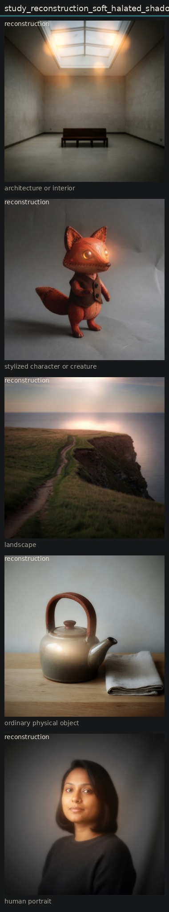

Linear reconstruction of aes_soft_halated_shadow
Translate aesthetic weights into prompt phrases and edit each anchor.
The weighted prompt moved all five anchors toward softness plus some darkening plus glow. Linear combination is a usable first-order control. Residual bloom and invented eye/sun lights show the linear model is incomplete, but not yet enough to require a tensor term. Record pairwise notes and keep the model linear.

stylized character or creature

reconstruction
ordinary physical object

reconstruction
human portrait

reconstruction
architecture or interior

reconstruction
landscape

reconstruction
Entanglement
- Softness and bloom still co-occur in the reconstruction.
- Shadow density under-expresses relative to its isolated high pole.
Next
- Raise only shadow density after a soft reconstruction (sequential, not simultaneous).
- Fit weights by comparing reconstruction scores to isolated high poles.